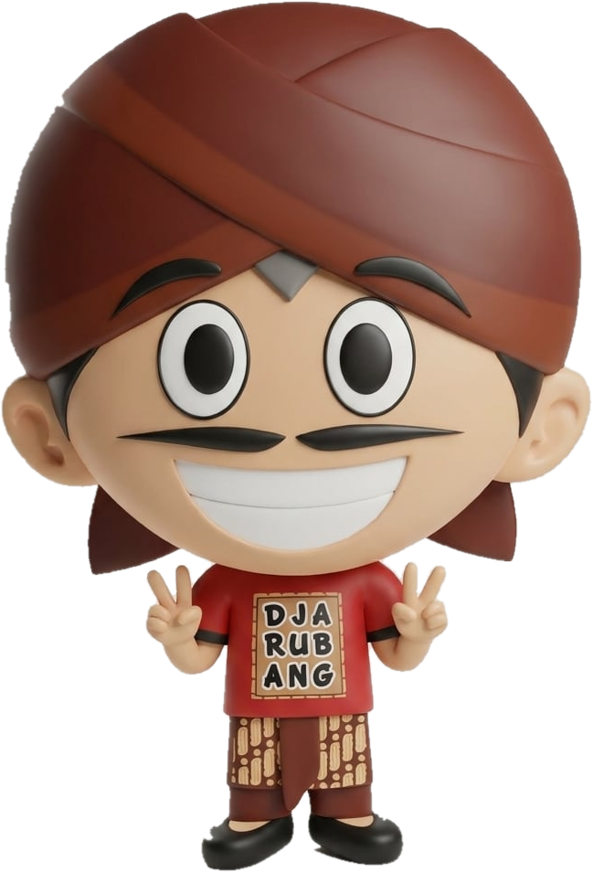

BerandaFAQ
Bantuan
FAQ Chocobrem
Temukan jawaban atas pertanyaan seputar Chocobrem Djarubang sebelum melakukan pemesanan.

Frequently Asked Questions
Temukan jawaban atas pertanyaan seputar Chocobrem Djarubang sebelum melakukan pemesanan.
Chocobrem dapat disimpan pada suhu ruang. Namun, untuk menjaga kualitas produk dan membuatnya lebih tahan lama, penyimpanan di dalam kulkas lebih disarankan.
Ada empat varian untuk dipilih:
- Milk Chocolate: rasa cokelat susu.
- Dark Chocolate: karakter rasa cokelat hitam.
- White Chocolate: karakter rasa cokelat putih yang creamy.
- Strawberry: perpaduan cokelat dengan sentuhan rasa stroberi.
Chocobrem memiliki tekstur khas brem yang lembut dan mudah lumer di mulut, dipadukan dengan lapisan cokelat di bagian luar.
Chocobrem dapat bertahan hingga 6 bulan setelah tanggal pembuatan apabila disimpan pada suhu ruang dengan kondisi penyimpanan yang sesuai. Penyimpanan di dalam kulkas lebih disarankan untuk membantu menjaga kualitas dan ketahanan produk.
Setiap kemasan Chocobrem dilengkapi informasi tanggal kedaluwarsa. Pelanggan dapat memeriksa informasi tersebut secara langsung pada kemasan.
Ya. Chocobrem dapat menjadi pilihan camilan maupun buah tangan khas Madiun untuk keluarga dan orang terdekat.
Tersedia Kotak Hadiah Chocobrem Djarubang berisi 6 pcs yang dapat menjadi pilihan untuk diberikan kepada keluarga, teman, maupun orang terdekat.
Pelanggan dapat memilih produk melalui katalog website, menambahkan produk ke keranjang, kemudian melanjutkan pemesanan melalui WhatsApp.